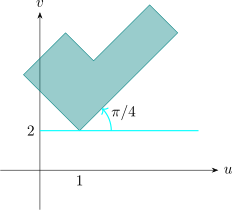
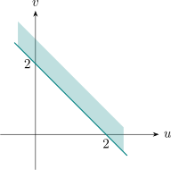

5.2 Linear Transformation
A transformation of the form \(\, w = az + b\,\) where \(a\) and \(b\) are complex constants is called a linear transformation.
When we consider the case \(a = 1\), we have \(w = z + b\). This transformation is such that all points in the \(z-\)plane are
being shifted uniformly by an amount \(b\).
Such a transformation is called a translation, in a translation the shape and size of each region
remains fixed.
Next, if we consider the case \(b = 0\), we have \(\, w = az\).
From this, we have that \(\,\left |w\right | = \left |az\right | = \left |a\right | \left |z\right |\,\) and \(Arg (w) = Arg (a) + Arg (z)\).
So we see that the modulus of any point, in the \(w-\)plane is obtained by multiplying the modulus of \(z\) by \(\left |a\right |\).
If \(\,\left |a\right |> 1\), then we get a contraction.
Similarly, the argument of a point \(w\) is obtained by adding the argument of \(a\) to the argument of
\(z\).
This results into a rotation of the region about the origin by an amount \(Arg(a)\).
The combination of these results shows that the linear transformation \(\, w = az + b\,\) corresponds to a rotation of
the \(z-\)plane about the origin through an angle \(Arg(a)\), coupled with a magnification (or contraction), followed
by an amount \(b\) in that order.
Example 5.1. Consider a typical region \(D\) below
Let \(\, w = az + b\,\) with \(\, a = \frac {1 + i}{\sqrt {2}}\,\) and \(\, b = 1 + 2i\)
Sketch the image of \(D\) in the \(uv-\)plane under the mapping \(w = az + b\).
Solution
\(\left |a\right | = \left |\frac {1 + i}{\sqrt {2}}\right | = 1\), so there is no change in size of \(D\).
\(Arg(a) = \frac {\pi }{4}\). So the region \(D\) is rotated by an amount \(\frac {\pi }{4}\) clockwise.

Example 5.2. Find the image of the region \(\, y> 1\,\) under the transformation \(\, w = (1 - i)z\).
Solution
Write \(\, w = (1 - i)z\,\) in the form \(\, z = \frac {1}{2}(1 + i)w\), i.e make \(z\) the subject.
Let \(w = u + iv\) and \(z = x + iy\). Then
\[\boxed {x + iy = \frac {1}{2} (1 + i) (u + iv)}\]
So that \(\, x = \frac {u - v}{2}\,\) and \(\, y = \frac {u + v}{2}\), so that the region \(y > 1\) is transformed into the region \(u + v>2\). in the \(w-\)plane.
When we move on the boundary line \(y = 1\) from \(i\) to \(1 + i\), the region remains left to the observer.
This cases movement on the image line \(u + v = 2\) from \(w = 1 + i\) to \(w = 2\), and hence the image region is taken left to the observer.

Example 5.3. Find the image of the semi-infinite strip \(x> 0\), \(\, 1 < y < 2\) under the mapping \(\, w = iz + 1\).
Solution
We have \(w = u + iv\) and \(z = x + iy\), so that \(\, w = i z + 1 \implies u + iv = i(x + iy) + 1\,\) so that
\[\boxed {u = 1 - y \,\text {and}\, v = x}\]
Now \(\, v = x \implies v > 0\,\) since \(\, x> 0\)
\( 1 < y < 2 \implies 1 < 1 - u < 2\)
\(\implies \, -1 < u < 0\)
So the image in the \(uv-\)plane is the strip \(\, v> 0, \, - 1 < u < 0\)
Example 5.4. construct a linear transformation which
- 1.
- Contains \(\, i\,\) onto \(\, -i\,\) and \(\, 1 + 2i\,\) onto itself.
- 2.
- Maps \(\, \left |z - 1\right | = 1\,\) onto \(\, \left |w - 3i\right |= 2\)
Solution
- 1.
- \(\, w = az + b\,\) Replacing we have
\[ \left .\begin {aligned} -i & = a i + b\\ 1 + 2i & = a(1 + 2i) + b\\ \end {aligned} \right \} \,\text {solve for} \, a \,\text {and}\,b \]
Doing that we get \(\, w = (2 + i)z + 1 - 3i\).
- 2.
- \(\, w = az + b\)
\(\left |z - 1\right | = 1\quad \longmapsto \quad \left |w - 3i\right | = 2\)
\( w - 3i = 2(z - 1)\)
\(\implies \quad w = 2z - 2 + 3i\)
Exercise
\(\left |z - 1\right | = 7 \quad \longmapsto \quad \left |w - 3i\right | = 2\)
\(w - 3i = \frac {2}{7} (z - 1)\)
- 1.
- A triangle \(\triangle \) in the \(z\) plane has vertices \(i\), \(1-i\), \(1+i\). Determine the triangle \(\triangle '\) onto which it is mapped by (a) \(w = 3z + 4 - 2i\), (b) \(w = iz + 2 - i\), and say how \(\triangle \) and \(\triangle '\) are related in each case.
- 2.
- Find the linear transformation carrying the imaginary axis onto the line through \(i\) and \(1 + 2i\).
Solution.
- 1.
- A map \(w=az+b\) acts on the whole plane as a rotation by \(\arg a\), a scaling by \(\left |a\right |\), then a translation by \(b\).
Straight lines go to straight lines, so it is enough to follow the three vertices.
(a) \(w=3z+4-2i\)
\[i\mapsto 4+i,\qquad 1-i\mapsto 7-5i,\qquad 1+i\mapsto 7+i .\] Here \(a=3\) is real and positive, so there is no rotation: \(\triangle '\) is \(\triangle \) enlarged by a factor \(3\) and shifted. The two triangles are similar, with the same orientation, and every length is tripled.
(b) \(w=iz+2-i\)
\[i\mapsto 1-i,\qquad 1-i\mapsto 3,\qquad 1+i\mapsto 1 .\] Now \(\left |a\right |=\left |i\right |=1\) and \(\arg a=\frac {\pi }{2}\), so there is no change of size: \(\triangle '\) is \(\triangle \) rotated through \(90^{\circ }\) about the origin and then translated. The two triangles are congruent.
- 2.
- The imaginary axis is the line through \(0\) and \(i\); the target is the line through \(i\) and \(1+2i\). A map
\(w=az+b\) is determined by where it sends two points, so require
\[0\mapsto i,\qquad i\mapsto 1+2i .\]
The first gives \(b=i\). The second gives \(ai+i=1+2i\), so \(ai=1+i\) and
\[a=\frac {1+i}{i}=\frac {(1+i)(-i)}{1}=1-i .\]
Hence \(w=(1-i)z+i\). As a check, the direction of the imaginary axis is \(i\), and \((1-i)\cdot i=1+i\), which is indeed the
direction from \(i\) to \(1+2i\).
The answer is not unique: any map sending the axis onto the line will do, and a different choice of image points gives a different \(a\) and \(b\).
Questions on this section
Stuck on something here? Ask below and it stays attached to this topic.